11 Aprilie 2026, Ora 11:00 · Str. Nucului nr. 13
Copiii și familiile din comunitate s-au adunat pentru un atelier creativ dedicat sărbătorii Paștelui — cu meșteșug, culoare și multă bucurie. A fost un prilej de părtășie și de a vorbi împreună despre înviere, într-un mod jucăuș și pe înțelesul celor mici.
Câteva imagini surprinse la atelierul din 11 aprilie 2026.
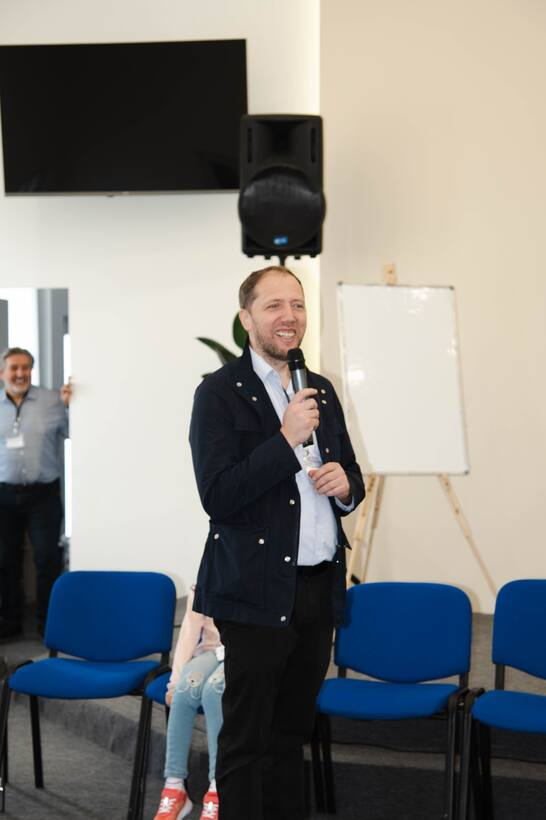
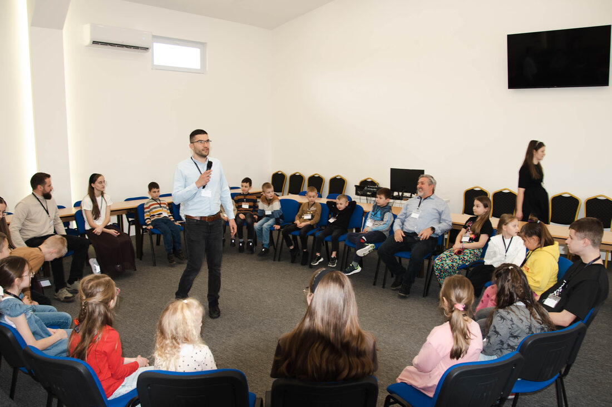
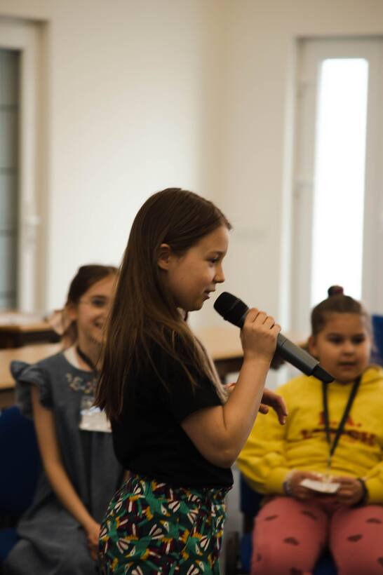
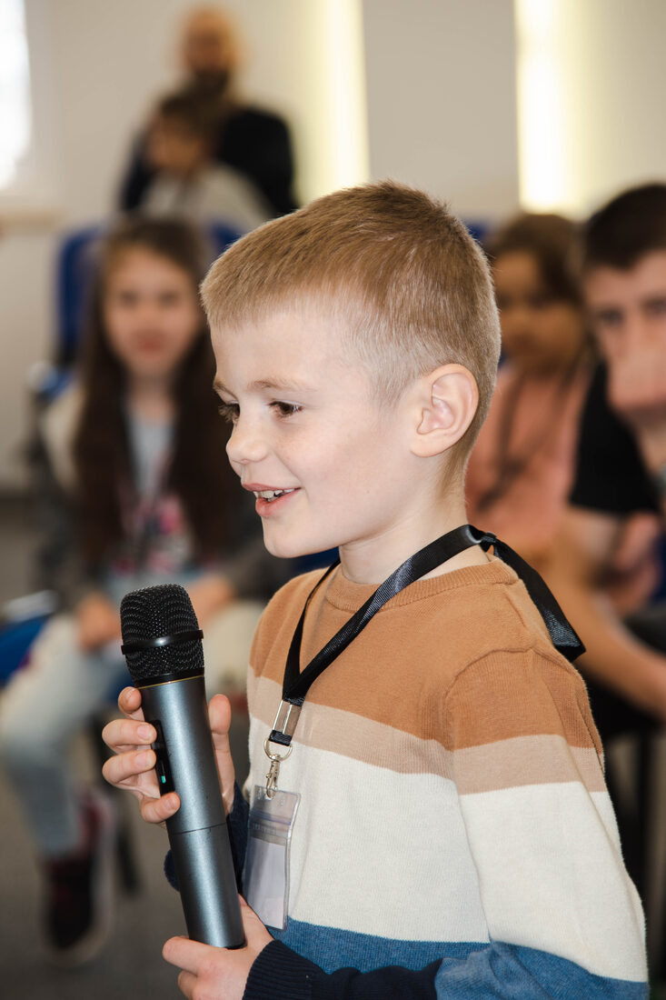
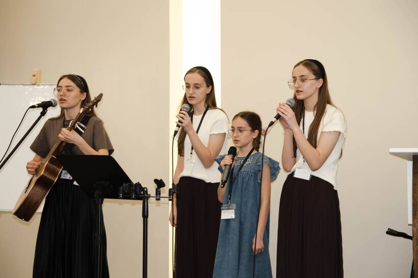
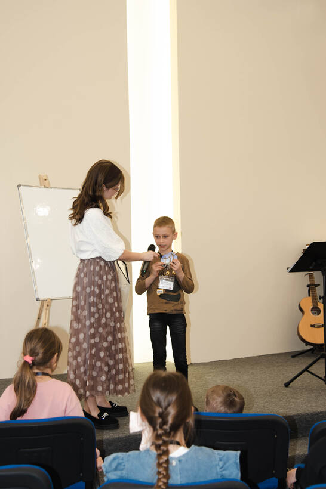
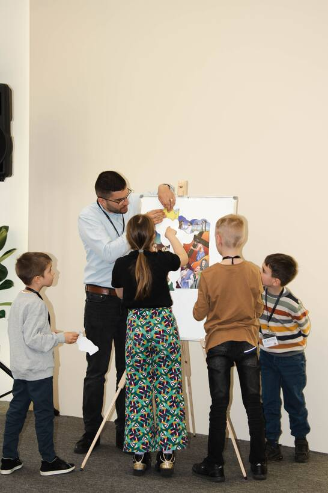
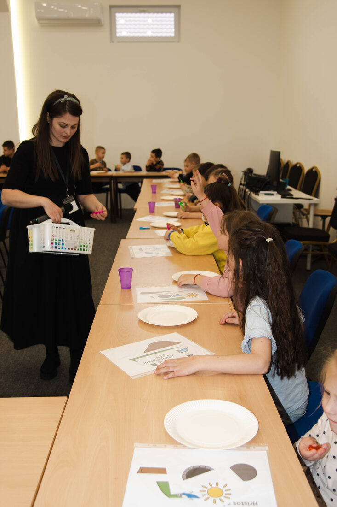
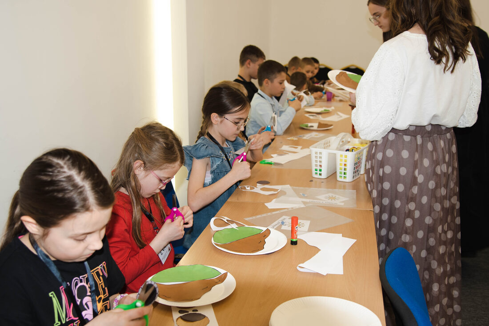
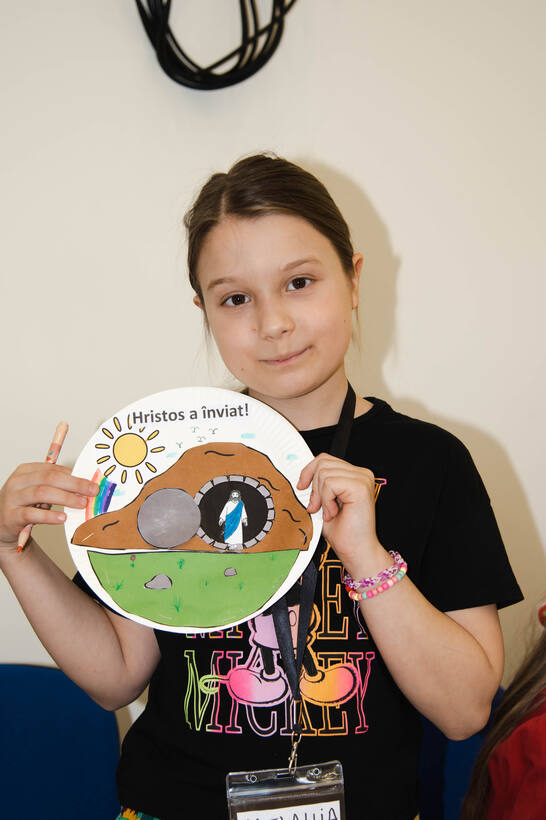
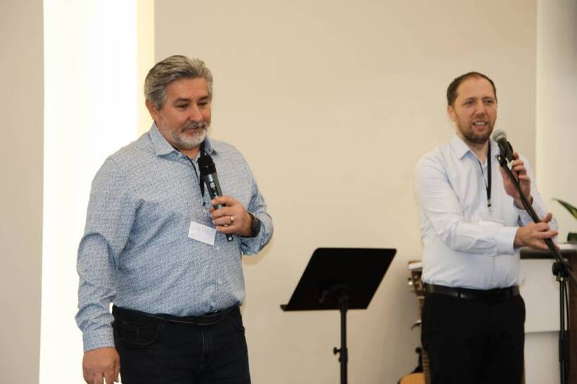
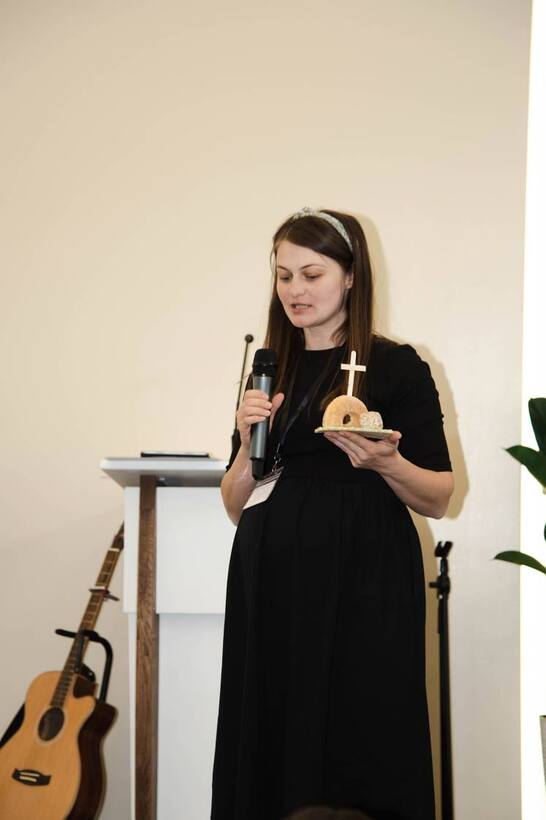
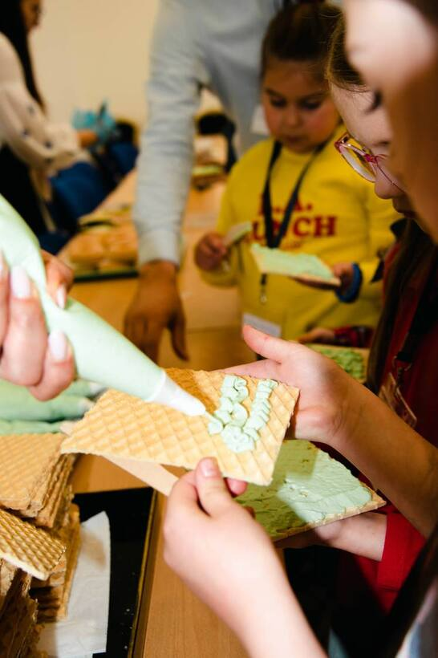